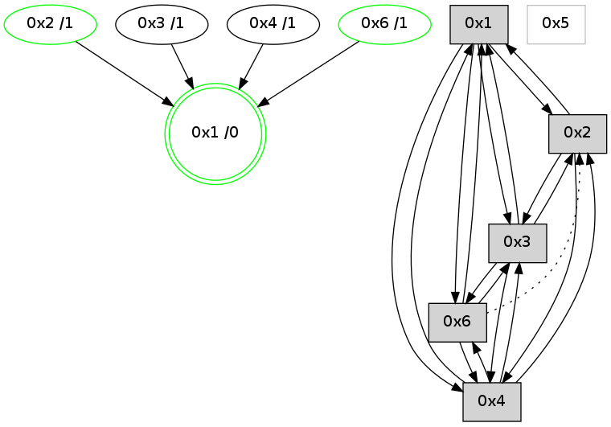

>> << IDX [start] -100 -25 -5 +0 +5 +25 [1215.33191705]
 Previous packets
----------------------------------------------------------------------
1210.309385 beacon01(adaf) #0 coord=01,02,05,03,04,06 cycle=944.0ms assoc
-- color-indic=0 64 61 b6
1210.319347 beacon02(adaf) #0 coord=01,02,05,03,04,06 cycle=944.0ms assoc 64 30 49
1210.329347 beacon05(adaf) #0 coord=01,02,05,03,04,06 cycle=944.0ms assoc 64 96 63
1210.339346 beacon03(adaf) #0 coord=01,02,05,03,04,06 cycle=944.0ms assoc 64 0a 47
1210.359347 beacon06(adaf) #0 coord=01,02,05,03,04,06 cycle=944.0ms assoc 64 d8 71
1210.371044 [Hello(3): seq=977 sym=6,2,1,4 color=2 sysInfo=hasWarning,MaxColorIndicationCalled,ColoringModeIndicationCalled,MaxColorResponseCalled stat=6:14,0,4,0/2:2,0,2,0/1:4,15,14,1/4:10,10,6,1]
1210.374470 [Hello(1): seq=880 sym=2,4,6,3 color=0 sysInfo=hasWarning,MaxColorIndicationCalled,MaxColorResponseCalled,MaxColorRequestCalled,ColoringModeRequestCalled stat=2:7,3,7,0/4:5,0,3,0/6:6,2,12,0/3:3,0,4,0]
----------------------------------------------------------------------
1211.313892 beacon01(adaf) #0 coord=01,02,05,03,04,06 cycle=944.0ms assoc
-- color-indic=0 64 a5 d9
1211.323852 beacon02(adaf) #0 coord=01,02,05,03,04,06 cycle=944.0ms assoc 64 f4 26
1211.333853 beacon05(adaf) #0 coord=01,02,05,03,04,06 cycle=944.0ms assoc 64 52 0c
1211.343853 beacon03(adaf) #0 coord=01,02,05,03,04,06 cycle=944.0ms assoc 64 ce 28
1211.353853 beacon04(adaf) #0 coord=01,02,05,03,04,06 cycle=944.0ms assoc 64 68 02
1211.363854 beacon06(adaf) #0 coord=01,02,05,03,04,06 cycle=944.0ms assoc 64 1c 1e
1211.375560 [Hello(2): seq=1465 sym=3,1,4 color=13 sysInfo=hasWarning,MaxColorIndicationCalled,ColoringModeIndicationCalled,MaxColorResponseCalled stat=3:0,0,3,0/1:11,7,15,0/4:7,0,4,0]
----------------------------------------------------------------------
1212.318397 beacon01(adaf) #0 coord=01,02,05,03,04,06 cycle=944.0ms assoc
-- color-indic=0 64 e9 69
1212.328358 beacon02(adaf) #0 coord=01,02,05,03,04,06 cycle=944.0ms assoc 64 b8 96
1212.338359 beacon05(adaf) #0 coord=01,02,05,03,04,06 cycle=944.0ms assoc 64 1e bc
1212.348359 beacon03(adaf) #0 coord=01,02,05,03,04,06 cycle=944.0ms assoc 64 82 98
1212.358359 beacon04(adaf) #0 coord=01,02,05,03,04,06 cycle=944.0ms assoc 64 24 b2
1212.368359 beacon06(adaf) #0 coord=01,02,05,03,04,06 cycle=944.0ms assoc 64 50 ae
1212.379826 [Hello(1): seq=881 sym=2,4,6,3 color=0 sysInfo=hasWarning,MaxColorIndicationCalled,MaxColorResponseCalled,MaxColorRequestCalled,ColoringModeRequestCalled stat=2:8,3,7,0/4:5,0,3,0/6:6,2,12,0/3:3,0,4,0]
1212.383725 [Hello(4): seq=977 sym=2,1,3,6 sysInfo=hasWarning stat=2:4,0,1,0/1:5,11,15,0/3:5,0,6,0/6:10,0,5,0]
----------------------------------------------------------------------
1213.322904 beacon01(adaf) #0 coord=01,02,05,03,04,06 cycle=944.0ms assoc
-- color-indic=0 64 2d 06
1213.332865 beacon02(adaf) #0 coord=01,02,05,03,04,06 cycle=944.0ms assoc 64 7c f9
1213.342865 beacon05(adaf) #0 coord=01,02,05,03,04,06 cycle=944.0ms assoc 64 da d3
1213.352866 beacon03(adaf) #0 coord=01,02,05,03,04,06 cycle=944.0ms assoc 64 46 f7
1213.362865 beacon04(adaf) #0 coord=01,02,05,03,04,06 cycle=944.0ms assoc 64 e0 dd
1213.372865 beacon06(adaf) #0 coord=01,02,05,03,04,06 cycle=944.0ms assoc 64 94 c1
1213.383868 [STC(1) #0.217 new-neigh,tree-change,inconsistent-stability,stable,to-color d=0]
1213.388230 [Hello(2): seq=1466 sym=3,1,4 color=13 sysInfo=hasWarning,MaxColorIndicationCalled,ColoringModeIndicationCalled,MaxColorResponseCalled stat=3:1,0,3,0/1:12,7,15,0/4:7,0,4,0]
----------------------------------------------------------------------
1214.327411 beacon01(adaf) #0 coord=01,02,05,03,04,06 cycle=944.0ms assoc
-- color-indic=0 64 60 01
1214.337373 beacon02(adaf) #0 coord=01,02,05,03,04,06 cycle=944.0ms assoc 64 31 fe
1214.347372 beacon05(adaf) #0 coord=01,02,05,03,04,06 cycle=944.0ms assoc 64 97 d4
1214.357372 beacon03(adaf) #0 coord=01,02,05,03,04,06 cycle=944.0ms assoc 64 0b f0
1214.367373 beacon04(adaf) #0 coord=01,02,05,03,04,06 cycle=944.0ms assoc 64 ad da
1214.389305 [Hello(4): seq=978 sym=2,1,3,6 sysInfo=hasWarning stat=2:5,0,1,0/1:5,11,0,0/3:5,0,6,0/6:10,0,5,0]
1214.392438 [STC(4)->1 #0.217 new-neigh,tree-change,inconsistent-stability,to-color d=1]
1214.395015 [Hello(3): seq=979 sym=6,2,1,4 color=2 sysInfo=hasWarning,MaxColorIndicationCalled,ColoringModeIndicationCalled,MaxColorResponseCalled stat=6:0,0,4,0/2:2,0,2,0/1:5,15,15,1/4:10,10,6,1]
1214.400401 [TreeStatus(3)-.->1 #0.217 new-neigh,tree-change,inconsistent-stability,stable child=1]